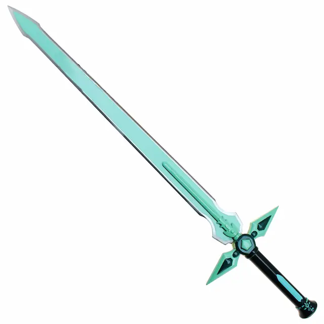
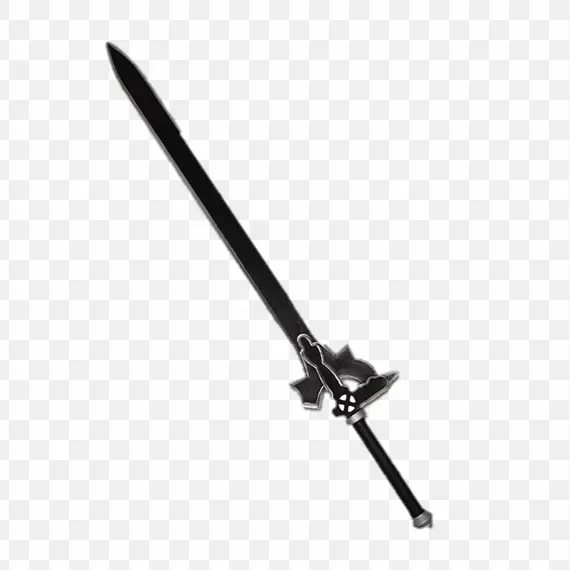
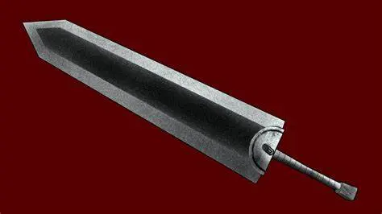
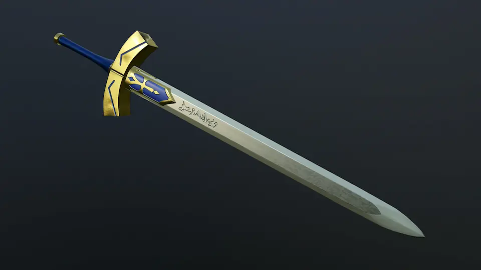

Weapons of Fiction
Dark Repulsar

Accuracies
The design is actualy realistic for a longsword.
Inaccuracies
A real longsword would be wielded two-handed, unless being used alongside a shield.
Would be near impossible to dual wield irl.
Elucidator

Accuracies
The design is actualy realistic for a longsword.
Inaccuracies
Is notably too heavy for practical use by the source material.
A Real longsword would be used with two hands, if they weren't it usualy meant they were being used alongside a shield, while it was possible to wield longswords one-handed given Elucidator's incredible weight as noted above it would be especialy impractical for it.
Would be near impossible to dual wield irl.
Dragon Slaye(Berserk)

Accuracies
The handle
Inaccuracies
Way to big to use, Being larger than its wielder, whenever you weren't actively swinging it around it would be scraping the ground behind, unless sheathed on the back in which case you wouldn't be able to unsheath it if you were in combat.
The blade is way to thick, it would be easier to use a club than as a sword.
Excalibur(Fate)

Accuracies
The hand guard extends past the blade of the broadsword
The blade is a proper size for a real broadsword
Is sometimes used without unsheathing, which can actualy be done if you don't wish to harm your foe to badly
Inaccuracies
magic